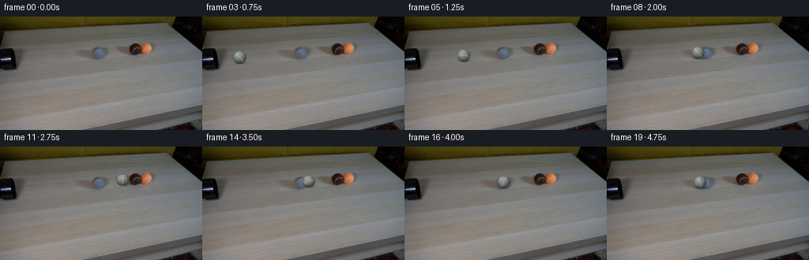
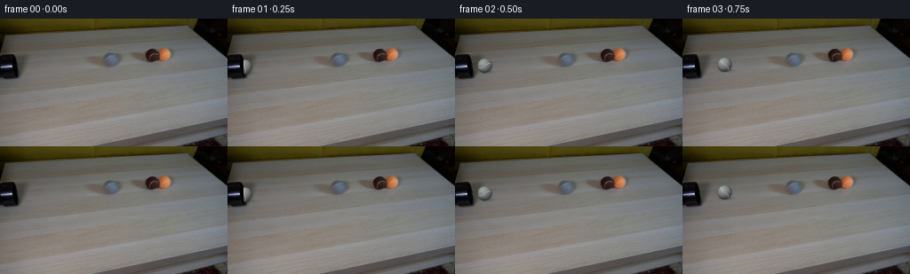

CODING AGENTS AS PIXEL WORLD MODELS
traex/GPT-5.6-Sol · 0028
点击播放 · 原生 RGB 像素
逐轮保存的候选
回放视频、检查图与代码变化。
每份候选均可单独播放。实际图片检查记录在下方工具轨迹中。
候选 01播放与检查图
点击播放 · 原生 RGB 像素


展开代码变化
--- 上一保存版本
+++ 本次保存版本
@@ -0,0 +1,151 @@
+"""Generate a locked-off, low-light tabletop tennis-ball collision.
+
+The supplied photograph is retained verbatim as the plate. The only new
+object is the gray ball: it follows the perspective line from the pipe mouth
+to the brown ball, spins, makes contact, and rebounds from the tightly packed
+pair. Drawing is analytic and deterministic so the submission is exactly
+reproducible.
+"""
+from pathlib import Path
+import numpy as np
+from PIL import Image
+import artifact_io
+
+ROOT = Path(__file__).resolve().parent
+PLATE = np.asarray(Image.open(ROOT / "first_frame.png").convert("RGB"), dtype=np.uint8)
+H, W = PLATE.shape[:2]
+
+
+def alpha_over(dst, rgb, alpha):
+ """Composite float RGB/alpha fields over an uint8 image in place."""
+ a = np.clip(alpha, 0.0, 1.0)[..., None]
+ out = dst.astype(np.float32) * (1.0 - a) + rgb.astype(np.float32) * a
+ dst[:] = np.clip(out + 0.5, 0, 255).astype(np.uint8)
+
+
+def draw_shadow(frame, cx, cy, radius, strength=1.0):
+ # A soft, contact-biased shadow consistent with the shadows beneath the
+ # two balls already in the source photograph.
+ yy, xx = np.mgrid[0:H, 0:W].astype(np.float32)
+ sx, sy = radius * 1.20, radius * 0.34
+ ex = (xx - (cx + 1.5)) / sx
+ ey = (yy - (cy + radius * 0.78)) / sy
+ soft = np.exp(-2.15 * (ex * ex + ey * ey))
+ # Keep the shadow below the centre of the sphere.
+ soft *= 1.0 / (1.0 + np.exp(-(yy - cy - radius * .33) * 1.7))
+ a = 0.31 * strength * soft
+ black = np.zeros_like(frame, dtype=np.float32)
+ alpha_over(frame, black, a)
+
+
+def draw_gray_tennis_ball(frame, cx, cy, radius, phase, squash=1.0):
+ """Render a fuzzy, shaded gray tennis ball and its rotating curved seam."""
+ yy, xx = np.mgrid[0:H, 0:W].astype(np.float32)
+ # During the instant of impact squash very subtly along the travel axis.
+ rx = radius / squash
+ ry = radius * squash
+ nx = (xx - cx) / rx
+ ny = (yy - cy) / ry
+ d2 = nx * nx + ny * ny
+ d = np.sqrt(np.maximum(d2, 0.0))
+
+ # Slightly soft/fibrous silhouette at this photographic resolution.
+ edge = np.clip((1.075 - d) / 0.115, 0.0, 1.0)
+ inside = d2 < 1.0
+ nz = np.sqrt(np.maximum(0.0, 1.0 - d2))
+
+ # Light in the plate is from upper right, while ambient light keeps the
+ # lower hemisphere visible in the dim room.
+ lx, ly, lz = -0.34, -0.64, 0.69
+ lambert = np.maximum(0.0, nx * lx + ny * ly + nz * lz)
+ shade = 0.48 + 0.61 * lambert + 0.20 * nz
+ base = np.zeros((H, W, 3), np.float32)
+ neutral = np.array([116.0, 121.0, 119.0], np.float32)
+ base[:] = neutral
+ base *= shade[..., None]
+
+ # Fine deterministic felt variation rotates with the sphere rather than
+ # crawling like video noise. It is deliberately sub-pixel/subtle.
+ u = nx * np.cos(phase) + nz * np.sin(phase)
+ v = ny
+ felt = (2.4 * np.sin(18.0 * u + 11.0 * v) +
+ 1.5 * np.sin(31.0 * u - 19.0 * v + 0.7))
+ base += felt[..., None]
+
+ # A tennis-ball seam: an S-like great-circle projection. Its orientation
+ # evolves with roll phase, making the translational movement legible.
+ ca, sa = np.cos(phase * 0.72 + 0.35), np.sin(phase * 0.72 + 0.35)
+ xr = nx * ca + ny * sa
+ yr = -nx * sa + ny * ca
+ curve = 0.34 * np.sin(2.45 * yr)
+ seamdist = np.abs(xr - curve)
+ seam = np.clip((0.105 - seamdist) / 0.065, 0.0, 1.0)
+ seam *= inside.astype(np.float32) * np.clip((0.94 - d) / 0.10, 0.0, 1.0)
+ seam_col = np.empty_like(base)
+ seam_col[:] = np.array([178.0, 181.0, 174.0], np.float32)
+ # The seam follows the same spherical light, but remains pale.
+ seam_col *= (0.73 + 0.28 * lambert)[..., None]
+ base = base * (1.0 - seam[..., None] * .78) + seam_col * seam[..., None] * .78
+
+ # Small broad highlight and a dark lower contact rim add volume.
+ hi = np.exp(-((nx + .34) ** 2 / .19 + (ny + .48) ** 2 / .13)) * inside
+ base += hi[..., None] * 12.0
+ lower = np.clip((ny - .57) / .34, 0, 1) * inside
+ base *= (1.0 - .17 * lower[..., None])
+
+ alpha_over(frame, np.clip(base, 0, 255), edge)
+
+
+def trajectory(i):
+ """Perspective-straight approach, contact at frame 11, then rebound."""
+ if i <= 11:
+ # Pipe mouth (19,54) to the left tangent of the brown ball (~155,42).
+ q = (i - 1) / 10.0
+ # Tiny ease-in while the ball first clears the pipe, then near-uniform.
+ q = q * (1.035 - 0.035 * q)
+ x = 19.0 + 136.0 * q
+ y = 54.0 - 12.0 * q
+ # Perspective makes the near ball very slightly larger.
+ r = 8.15 - 0.45 * q
+ distance = 136.53 * q
+ else:
+ # It rebounds more slowly after giving up energy to the packed pair.
+ rebound_x = np.array([147.0, 140.2, 134.3, 129.3, 125.2,
+ 121.9, 119.4, 117.6], np.float32)
+ x = float(rebound_x[i - 12])
+ # Same image-space straight line back toward the pipe.
+ y = 42.0 + (155.0 - x) * (12.0 / 136.0)
+ r = 7.70 + (155.0 - x) * (0.45 / 136.0)
+ distance = 136.53 + (155.0 - x)
+ return x, y, r, distance
+
+
+def generate():
+ frames = np.repeat(PLATE[None, ...], 20, axis=0)
+ # Frame 00 is intentionally untouched and therefore pixel-identical.
+ for i in range(1, 20):
+ frame = frames[i]
+ x, y, r, dist = trajectory(i)
+ draw_shadow(frame, x, y, r, 0.82 if i == 1 else 1.0)
+ # Rolling phase reverses after impact. Radius converts travel to angle.
+ if i <= 11:
+ phase = dist / r
+ else:
+ phase = 136.53 / 7.7 - (dist - 136.53) / r
+ squash = 0.93 if i == 11 else (0.97 if i == 12 else 1.0)
+ draw_gray_tennis_ball(frame, x, y, r, phase, squash)
+
+ # At the first emerging frame, the near black lip remains in front of
+ # the rear half of the ball, clearly placing it inside the pipe.
+ if i == 1:
+ yy, xx = np.mgrid[0:H, 0:W]
+ lip = (xx < 18) & (yy >= 40) & (yy <= 67)
+ frame[lip] = PLATE[lip]
+
+ # Contract invariant, made explicit rather than relying on convention.
+ frames[0] = PLATE
+ return frames.astype(np.uint8)
+
+
+if __name__ == "__main__":
+ artifact_io.save(generate(), ROOT)
候选 02播放与检查图
点击播放 · 原生 RGB 像素

展开代码变化
--- 上一保存版本
+++ 本次保存版本
@@ -9,11 +9,28 @@
from pathlib import Path
import numpy as np
from PIL import Image
+import cv2
import artifact_io
ROOT = Path(__file__).resolve().parent
PLATE = np.asarray(Image.open(ROOT / "first_frame.png").convert("RGB"), dtype=np.uint8)
H, W = PLATE.shape[:2]
+
+
+# Isolate the touching brown/orange pair once. After impact it is translated
+# as a single two-ball target (the expected elastic response when the incoming
+# ball strikes two equal, already-touching balls). The vacated part of the
+# tabletop is reconstructed solely from neighboring pixels of the input.
+_yy, _xx = np.mgrid[0:H, 0:W].astype(np.float32)
+_brown = np.sqrt(((_xx - 171.0) / 8.4) ** 2 + ((_yy - 41.2) / 8.2) ** 2)
+_orange = np.sqrt(((_xx - 187.0) / 9.2) ** 2 + ((_yy - 40.7) / 8.8) ** 2)
+TARGET_ALPHA = np.clip((1.08 - np.minimum(_brown, _orange)) / 0.13, 0.0, 1.0)
+_erase = ((_brown < 1.23) | (_orange < 1.22) |
+ (((_xx - 179.0) / 21.5) ** 2 + ((_yy - 48.2) / 4.6) ** 2 < 1.0))
+_mask = (_erase.astype(np.uint8) * 255)
+CLEAN_PLATE = cv2.cvtColor(cv2.inpaint(cv2.cvtColor(PLATE, cv2.COLOR_RGB2BGR),
+ _mask, 4.0, cv2.INPAINT_TELEA),
+ cv2.COLOR_BGR2RGB)
def alpha_over(dst, rgb, alpha):
@@ -32,7 +49,8 @@
ey = (yy - (cy + radius * 0.78)) / sy
soft = np.exp(-2.15 * (ex * ex + ey * ey))
# Keep the shadow below the centre of the sphere.
- soft *= 1.0 / (1.0 + np.exp(-(yy - cy - radius * .33) * 1.7))
+ z = np.clip(-(yy - cy - radius * .33) * 1.7, -40.0, 40.0)
+ soft *= 1.0 / (1.0 + np.exp(z))
a = 0.31 * strength * soft
black = np.zeros_like(frame, dtype=np.float32)
alpha_over(frame, black, a)
@@ -120,11 +138,32 @@
return x, y, r, distance
+def draw_moving_target(frame, shift):
+ """Translate the photographed touching pair, preserving its real texture."""
+ mat = np.float32([[1.0, 0.0, shift], [0.0, 1.0, 0.0]])
+ moved_rgb = cv2.warpAffine(PLATE, mat, (W, H), flags=cv2.INTER_LINEAR,
+ borderMode=cv2.BORDER_REFLECT)
+ moved_a = cv2.warpAffine(TARGET_ALPHA, mat, (W, H), flags=cv2.INTER_LINEAR,
+ borderMode=cv2.BORDER_CONSTANT)
+ alpha_over(frame, moved_rgb, moved_a)
+
+
def generate():
frames = np.repeat(PLATE[None, ...], 20, axis=0)
# Frame 00 is intentionally untouched and therefore pixel-identical.
for i in range(1, 20):
- frame = frames[i]
+ # Once hit, the touching pair receives most of the incoming momentum.
+ # Its speed falls gently under rolling resistance.
+ if i >= 12:
+ pair_shift = np.array([7.8, 15.1, 21.8, 28.0, 33.6, 38.6, 43.0, 46.8],
+ np.float32)[i - 12]
+ frames[i] = CLEAN_PLATE
+ frame = frames[i]
+ draw_shadow(frame, 171.0 + pair_shift, 41.2, 8.2, .84)
+ draw_shadow(frame, 187.0 + pair_shift, 40.7, 8.8, .84)
+ draw_moving_target(frame, float(pair_shift))
+ else:
+ frame = frames[i]
x, y, r, dist = trajectory(i)
draw_shadow(frame, x, y, r, 0.82 if i == 1 else 1.0)
# Rolling phase reverses after impact. Radius converts travel to angle.
候选 03播放与检查图
可观测工具轨迹
实际执行的命令与返回图片。
命令 1exit 0
/bin/bash -lc "cat GENERATION_RULES.md && printf '\\n---PROMPT---\\n' && cat prompt.txt"
命令 2exit 127
/bin/bash -lc "find . -maxdepth 2 -type f -printf '%p\\n' | sort && file first_frame.png"
命令 3exit 0
/bin/bash -lc "python3 - <<'PY'
from PIL import Image
import numpy as np
im=np.array(Image.open('first_frame.png').convert('RGB'))
print(im.shape,im.dtype, im.min((0,1)),im.max((0,1)),im.mean((0,1)))
# sample grid
for y in range(0,144,12):
print(y, [tuple(im[y,x]) for x in range(0,256,16)])
PY"命令 4exit 0
/bin/bash -lc "python3 - <<'PY'
from PIL import Image
import numpy as np, cv2
im=np.array(Image.open('first_frame.png').convert('RGB'))
hsv=cv2.cvtColor(im,cv2.COLOR_RGB2HSV)
# bins high saturation counts and bbox/component
for s in [30,50,70,90,110,130,150]:
m=hsv[:,:,1]>s
ys,xs=np.where(m)
print('S',s,'n',len(xs),'bbox', (xs.min(),ys.min(),xs.max(),ys.max()) if len(xs) else None)
# saturated by blocks 8x8 averages and max
for by in range(0,144,8):
row=''
for bx in range(0,256,8):
p=hsv[by:by+8,bx:bx+8,1]
q=np.percentile(p,75)
row += ' .:-=+*#%@'[min(9,int(q/256*10))]
print(f'{by:3}',row)
print('value map')
for by in range(0,144,8):
row=''
for bx in range(0,256,8):
q=im[by:by+8,bx:bx+8].mean()
row += ' .:-=+*#%@'[min(9,int(q/256*10))]
print(f'{by:3}',row)
# kmeans colors spatial mean bbox
Z=im.reshape(-1,3).astype(np.float32)
crit=(cv2.TERM_CRITERIA_EPS+cv2.TERM_CRITERIA_MAX_ITER,50,.2)
_,lab,cen=cv2.kmeans(Z,12,None,crit,10,cv2.KMEANS_PP_CENTERS)
lab=lab.ravel()
for i,c in sorted(enumerate(cen),key=lambda q:q[1].mean()):
ys,xs=np.where(lab.reshape(144,256)==i)
print(i,c.round(1),len(xs),'xymean',xs.mean().round(1),ys.mean().round(1),'bbox',xs.min(),ys.min(),xs.max(),ys.max())
PY"命令 5exit 0
/bin/bash -lc "python3 - <<'PY'
from PIL import Image
import numpy as np, cv2
im=np.array(Image.open('first_frame.png').convert('RGB'))
h=cv2.cvtColor(im,cv2.COLOR_RGB2HSV)
chars=' .:-=+*#%@'
for mode in ['V','S','H']:
print('\\n',mode)
for y in range(20,70,2):
r=''
for x in range(120,220,2):
p=h[y:y+2,x:x+2]
if mode=='V': q=p[:,:,2].mean()/256
elif mode=='S': q=p[:,:,1].mean()/256
else: q=p[:,:,0].mean()/180
r += chars[min(9,int(q*10))]
print('%3d'%y,r)
# exact patches RGB means 4 px around expected
for y in range(24,65,4):
print('y',y,end=' ')
for x in range(120,221,4):
p=im[y:y+4,x:x+4].mean((0,1)).astype(int)
# compact hue sat val
q=cv2.cvtColor(np.uint8([[p]]),cv2.COLOR_RGB2HSV)[0,0]
print(f'{q[0]:02x}{q[1]//16:x}{q[2]//16:x}',end=' ')
print()
PY"命令 6exit 0
/bin/bash -lc "python3 - <<'PY'
from PIL import Image
import numpy as np
im=np.array(Image.open('first_frame.png').convert('RGB'))
# classify unusual relative to local broad median at each y; print ANSI? text RGB each pixels by handcrafted hue/color
for y in range(26,56):
s=''
for x in range(130,211):
r,g,b=map(int,im[y,x])
if max(r,g,b)<35: c='K'
elif r>g*1.25 and r>b*1.5: c='O' # orange brown
elif r>g*1.12 and r>b*1.15: c='o'
elif b>r*1.15: c='B'
elif max(r,g,b)-min(r,g,b)<15: c='.'
else:c=','
s+=c
print(f'{y:3}',s)
print('RGB region every 2 px x156:198 y30:50')
for y in range(30,52,2):
print(y, [tuple(im[y,x]) for x in range(156,200,2)])
PY"命令 7exit 0
/bin/bash -lc "python3 - <<'PY'
import cv2, numpy as np
from PIL import Image
im=np.array(Image.open('first_frame.png').convert('RGB'))
g=cv2.cvtColor(im,cv2.COLOR_RGB2GRAY)
for t in [10,20,30,40,50,60,70,80]:
m=(g<t).astype('uint8')
n,l,st,cen=cv2.connectedComponentsWithStats(m)
cs=[]
for i in range(1,n):
x,y,w,h,a=st[i]
if a>10:cs.append((a,x,y,w,h,tuple(np.round(cen[i],1))))
print('T',t,sorted(cs,reverse=True)[:10])
# grayscale horizontal rows first 100 cols grouped symbols
ch=' .:-=+*#%@'
for y in range(0,90,2):
s=''
for x in range(0,120,2):
q=g[y:y+2,x:x+2].mean()
s += ch[min(9,int(q/256*10))]
print(f'{y:3}',s)
PY"命令 8exit 0
/bin/bash -lc "python3 - <<'PY'
from PIL import Image
import numpy as np
im=np.array(Image.open('first_frame.png').convert('RGB'))
chars=' .:-=+*#%@'
for mode in range(3):
print('\\nC',mode)
for y in range(25,76):
s=''
for x in range(0,61):
q=im[y,x,mode]
s+=chars[min(9,int(q/256*10))]
print(f'{y:3}',s)
PY"命令 9exit 0
/bin/bash -lc 'cat artifact_io.py'
命令 10exit 0
/bin/bash -lc "python3 - <<'PY'
from PIL import Image
import numpy as np
im=np.array(Image.open('first_frame.png').convert('RGB'))
for y in range(42,66):
print(y,['%3d'%im[y,x].mean() for x in range(0,22)])
PY"命令 11exit 0
/bin/bash -lc "cat > generate.py <<'PY'
\"\"\"Generate a locked-off, low-light tabletop tennis-ball collision.
The supplied photograph is retained verbatim as the plate. The only new
object is the gray ball: it follows the perspective line from the pipe mouth
to the brown ball, spins, makes contact, and rebounds from the tightly packed
pair. Drawing is analytic and deterministic so the submission is exactly
reproducible.
\"\"\"
from pathlib import Path
import numpy as np
from PIL import Image
import artifact_io
ROOT = Path(__file__).resolve().parent
PLATE = np.asarray(Image.open(ROOT / \"first_frame.png\").convert(\"RGB\"), dtype=np.uint8)
H, W = PLATE.shape[:2]
def alpha_over(dst, rgb, alpha):
\"\"\"Composite float RGB/alpha fields over an uint8 image in place.\"\"\"
a = np.clip(alpha, 0.0, 1.0)[..., None]
out = dst.astype(np.float32) * (1.0 - a) + rgb.astype(np.float32) * a
dst[:] = np.clip(out + 0.5, 0, 255).astype(np.uint8)
def draw_shadow(frame, cx, cy, radius, strength=1.0):
# A soft, contact-biased shadow consistent with the shadows beneath the
# two balls already in the source photograph.
yy, xx = np.mgrid[0:H, 0:W].astype(np.float32)
sx, sy = radius * 1.20, radius * 0.34
ex = (xx - (cx + 1.5)) / sx
ey = (yy - (cy + radius * 0.78)) / sy
soft = np.exp(-2.15 * (ex * ex + ey * ey))
# Keep the shadow below the centre of the sphere.
soft *= 1.0 / (1.0 + np.exp(-(yy - cy - radius * .33) * 1.7))
a = 0.31 * strength * soft
black = np.zeros_like(frame, dtype=np.float32)
alpha_over(frame, black, a)
def draw_gray_tennis_ball(frame, cx, cy, radius, phase, squash=1.0):
\"\"\"Render a fuzzy, shaded gray tennis ball and its rotating curved seam.\"\"\"
yy, xx = np.mgrid[0:H, 0:W].astype(np.float32)
# During the instant of impact squash very subtly along the travel axis.
rx = radius / squash
ry = radius * squash
nx = (xx - cx) / rx
ny = (yy - cy) / ry
d2 = nx * nx + ny * ny
d = np.sqrt(np.maximum(d2, 0.0))
# Slightly soft/fibrous silhouette at this photographic resolution.
edge = np.clip((1.075 - d) / 0.115, 0.0, 1.0)
inside = d2 < 1.0
nz = np.sqrt(np.maximum(0.0, 1.0 - d2))
# Light in the plate is from upper right, while ambient light keeps the
# lower hemisphere visible in the dim room.
lx, ly, lz = -0.34, -0.64, 0.69
lambert = np.maximum(0.0, nx * lx + ny * ly + nz * lz)
shade = 0.48 + 0.61 * lambert + 0.20 * nz
base = np.zeros((H, W, 3), np.float32)
neutral = np.array([116.0, 121.0, 119.0], np.float32)
base[:] = neutral
base *= shade[..., None]
# Fine deterministic felt variation rotates with the sphere rather than
# crawling like video noise. It is deliberately sub-pixel/subtle.
u = nx * np.cos(phase) + nz * np.sin(phase)
v = ny
felt = (2.4 * np.sin(18.0 * u + 11.0 * v) +
1.5 * np.sin(31.0 * u - 19.0 * v + 0.7))
base += felt[..., None]
# A tennis-ball seam: an S-like great-circle projection. Its orientation
# evolves with roll phase, making the translational movement legible.
ca, sa = np.cos(phase * 0.72 + 0.35), np.sin(phase * 0.72 + 0.35)
xr = nx * ca + ny * sa
yr = -nx * sa + ny * ca
curve = 0.34 * np.sin(2.45 * yr)
seamdist = np.abs(xr - curve)
seam = np.clip((0.105 - seamdist) / 0.065, 0.0, 1.0)
seam *= inside.astype(np.float32) * np.clip((0.94 - d) / 0.10, 0.0, 1.0)
seam_col = np.empty_like(base)
seam_col[:] = np.array([178.0, 181.0, 174.0], np.float32)
# The seam follows the same spherical light, but remains pale.
seam_col *= (0.73 + 0.28 * lambert)[..., None]
base = base * (1.0 - seam[..., None] * .78) + seam_col * seam[..., None] * .78
# Small broad highlight and a dark lower contact rim add volume.
hi = np.exp(-((nx + .34) ** 2 / .19 + (ny + .48) ** 2 / .13)) * inside
base += hi[..., None] * 12.0
lower = np.clip((ny - .57) / .34, 0, 1) * inside
base *= (1.0 - .17 * lower[..., None])
alpha_over(frame, np.clip(base, 0, 255), edge)
def trajectory(i):
\"\"\"Perspective-straight approach, contact at frame 11, then rebound.\"\"\"
if i <= 11:
# Pipe mouth (19,54) to the left tangent of the brown ball (~155,42).
q = (i - 1) / 10.0
# Tiny ease-in while the ball first clears the pipe, then near-uniform.
q = q * (1.035 - 0.035 * q)
x = 19.0 + 136.0 * q
y = 54.0 - 12.0 * q
# Perspective makes the near ball very slightly larger.
r = 8.15 - 0.45 * q
distance = 136.53 * q
else:
# It rebounds more slowly after giving up energy to the packed pair.
rebound_x = np.array([147.0, 140.2, 134.3, 129.3, 125.2,
121.9, 119.4, 117.6], np.float32)
x = float(rebound_x[i - 12])
# Same image-space straight line back toward the pipe.
y = 42.0 + (155.0 - x) * (12.0 / 136.0)
r = 7.70 + (155.0 - x) * (0.45 / 136.0)
distance = 136.53 + (155.0 - x)
return x, y, r, distance
def generate():
frames = np.repeat(PLATE[None, ...], 20, axis=0)
# Frame 00 is intentionally untouched and therefore pixel-identical.
for i in range(1, 20):
frame = frames[i]
x, y, r, dist = trajectory(i)
draw_shadow(frame, x, y, r, 0.82 if i == 1 else 1.0)
# Rolling phase reverses after impact. Radius converts travel to angle.
if i <= 11:
phase = dist / r
else:
phase = 136.53 / 7.7 - (dist - 136.53) / r
squash = 0.93 if i == 11 else (0.97 if i == 12 else 1.0)
draw_gray_tennis_ball(frame, x, y, r, phase, squash)
# At the first emerging frame, the near black lip remains in front of
# the rear half of the ball, clearly placing it inside the pipe.
if i == 1:
yy, xx = np.mgrid[0:H, 0:W]
lip = (xx < 18) & (yy >= 40) & (yy <= 67)
frame[lip] = PLATE[lip]
# Contract invariant, made explicit rather than relying on convention.
frames[0] = PLATE
return frames.astype(np.uint8)
if __name__ == \"__main__\":
artifact_io.save(generate(), ROOT)
PY
python3 generate.py
python3 - <<'PY'
import numpy as np
from PIL import Image
z=np.load('pixels.npz')['pixels']
a=np.array(Image.open('first_frame.png').convert('RGB'))
f=np.array(Image.open('frames/00.png').convert('RGB'))
print('pixels',z.shape,z.dtype,'frame0 exact',np.array_equal(a,f))
for i in range(20):
b=np.array(Image.open(f'frames/{i:02d}.png'))
print(i, int(np.sum(np.any(b"'!=a,axis=2))), tuple(np.where(np.any(b!=a,axis=2))[1][[0,-1]]) if np.any(b!=a) else '"'-')
PY"命令 12exit 0
/bin/bash -lc "python3 generate.py && python3 - <<'PY'
from PIL import Image
import numpy as np
im=np.array(Image.open('inspection.png'))
print('inspection',im.shape,'outputs ok')
fr=np.stack([np.array(Image.open(f'frames/{i:02d}.png')) for i in range(20)])
base=np.array(Image.open('first_frame.png'))
print(fr.shape,fr.dtype,'exact',np.array_equal(fr[0],base),'range',fr.min(),fr.max())
print('mean temporal diffs',[round(np.abs(fr[i].astype(int)-fr[i-1].astype(int)).mean(),2) for i in range(1,20)])
PY
ls -lh pixels.npz index.html inspection.png frames/00.png frames/19.png"保存候选 3 份；完成命令 12 次；可验证图片返回 0 张。原始 API 响应与完整日志保留在本地。